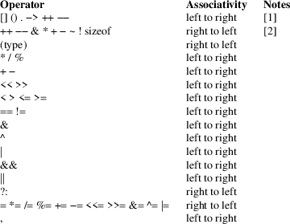

operator − C operator precedence and order of evaluation
This manual page lists C operators and their precedence in evaluation.

The following notes provide further information to the above table:
|
[1] |
The ++ and −− operators at this precedence level are the postfix flavors of the operators. | ||
|
[2] |
The ++ and −− operators at this precedence level are the prefix flavors of the operators. |